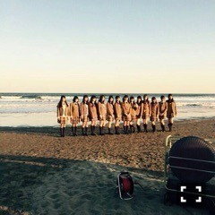
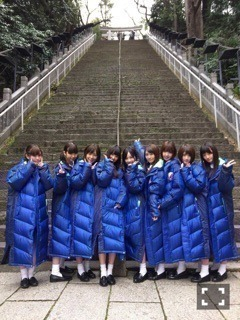
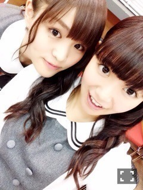
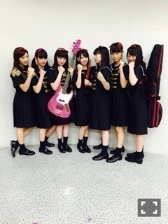
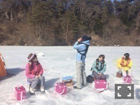
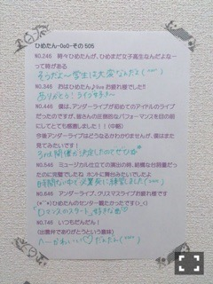
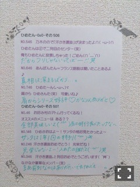

| 2015/03 17 Tue | ひめたん-OoO-その528 |

ちらっ。
いよいよ明日は
11thシングル発売日！
アンダーMV、秋元中元ペアPV
どちらもType-Cに収録されています
よろしくお願いします～＊
それぞれのエピソードは
次回の日記にゆっくり書くね( ˇωˇ )
どちらでもお芝居をしています
精一杯がんばったつもりです......うぅ

そうそう、
昨日の乃木どこは見てくれたかな？
東京メトロさん全面協力のもの
11thシングルのキャンペーンを
このリリースウィークのみ実施中！
乃木坂ちゃんが東京メトロの全駅を
ジャックしています！
ひめたんのポスターは
九段下駅、竹橋駅、半蔵門駅、神保町駅
に貼ってあります( ˇωˇ )
各駅ごとに違ったメッセージを
書いているので全部みてほしい☆
なんとも贅沢すぎるキャンペーン。
いろんなメンバーのポスターを
メトロに乗って探してみてね～
チーム「ざ」

この階段 実際に見ると
なかなか高さがあるんだよ～
かなりんよくがんばりました（＾ω＾）
そして遅くなりましたが
アルバム特典クルージングイベント
来てくださった当選者のみなさん
ありがとうございました\( ˆoˆ )/
アルバムはいろんなイベントがあって
新鮮で楽しいね！
B班はかりん・鈴木・中元でした☆
B班だったみなさん
お世話になりました～
次はチェキ会！よろしくね！


前回の乃木ののは
和田・中元の広島コンビでした
日記で事前に告知できなくて
ごめんね( >_< )
めーるでお知らせしました～
あと、そう、花粉症で
お聴き苦しい放送をお届けしてしまって
そちらもごめんなさい( >_< )
聴いてくださった方は
感想待ってます！
久々の乃木のの楽しかったなあ
ラジオ大好き♡
次回は大分コンビ～

告知いきますよ～
乃木坂46SHOW
西武ドームに密着、そして
乃木團で歌収録に呼んでいただきました
乃木團としてのオファーは
これがはじめて！
やったー\( ˆoˆ )/
「One Night Carnival」を
披露させていただきます
本編は確か西武ドーム特集だったかな？
よろしくお願いします！
ソニレコ！暇つぶしTV
3月2週目の回がオンエアされました
先週に引き続き
桜井・星野・中元がゲストで
おじゃましましたよ～
よろしくお願いします(´｡･v･｡｀)
のぎ天
今回は釣り部におじゃまします！
みなさんワカサギ釣りは
経験ありますか（ ˆoˆ ）？
あのね～難しい！！
がんばったのでぜひ
チェックしてみてください！

これ写真で見るとシュールね
シャウトしてます(笑)

 ひめたんの好きな動物はなに？
ひめたんの好きな動物はなに？
わんちゃん⊂( ˆoˆ )⊃
特にヨーキーが好きです♡
新たに挑戦してみたいことは
なんですか？
最近は読書を久々にやってますよ～
言葉をたくさん知ってる人って
いいなって思って。
ひめたんが毎日
やっていることは何？
顔と脚のマッサージ( ˇωˇ )
お気に入りのクリームを見つけたから
マッサージも癒しの時間です♡
お部屋の芳香剤って
なんの香りに してる？
気分変えたいから
なんか良いのないかな？
芳香剤というか
アロマ加湿器に柑橘系の香りのを
使用しています！
爽やかな香りだし喉にもいいらしいよ
まだまだ乾燥してる時期だからオススメ
ひめたんはどんな時に
幸せを感じますか？
何だろう、必要とされてるなって
感じるとき！
あと甘いもの食べてるとき！
踊ってて振りが可愛いとか
楽しいって思う曲ベスト３を教えて!!
月の大きさ
あの日、僕は咄嗟に嘘をついた
夏のFree&Easy
可愛いで選んでないかも。楽しい。
ひめは個人的に大きく踊るのが
気持ちよいなって思うタイプなので
この3曲かな？
ひめたんの日記の
コメント欄下２ケタに46を踏んだ方へ
手書きでコメ返するコーナー
＼ ひめたん46 ／



いつもたくさんのコメント
ありがとうございます
前回の日記には力強い言葉を
たくさんかけていただいて
がんばろう！って思いました
ひめにはみなさんがついてる！
それだけで勇気がわきます\( ˆoˆ )/
最近はありがたいことに
いろんな撮影をさせていただきました
自分の引き出しの無さを
改めて痛感しつつ
でもやっぱりこのお仕事は楽しいな♡
今日の日記も真面目モードなのね
告知はしっかりするタイプ(´｡･v･｡｀)
にゃんにゃん～
(＊´・ω・＊)
コメント(1086)
2015/03/17 23:42